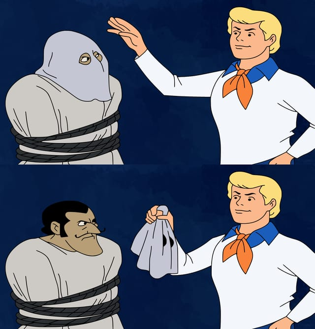

Eu teria conseguido se não fossem esses filósofos enxeridos e esse Gilbert Ryle idiota!
Você já chegou a se perguntar se tudo que você viveu até agora poderia não passar de uma ilusão? Se poderia ser tudo um mero sonho, ou, pior, uma simulação na Matrix feita por máquinas que dominaram a terra? Se você é uma pessoa normal, talvez não, mas essa é uma pergunta cotidiana para um filósofo. O René Descartes, um filósofo francês do século 17, por exemplo, dedicou boa parte do seu tempo livre para encontrar uma resposta para essa questão.
Ele pensou o seguinte: não é possível que algum demônio maléfico esteja me manipulando e fazendo tudo que eu percebo ser apenas uma fantasia? Se, nesse caso, existe uma razão séria para duvidar da existência de tudo, mesmo de coisas que parecem tão evidentes, para encontrar uma verdade segura é melhor partir do princípio de que absolutamente tudo é falso.
Vamos entrar na viagem do Descartes por um momento. Ok, tudo, desde seu corpo até esse parágrafo particular que você está lendo agora, não passa de uma alucinação. O que sobra de real então? Ora, o próprio fato de que você pensa que tudo isso é mentira!

Mesmo que seus sentidos te enganem, todos os seus raciocínios estejam errados e tudo seja como um sonho, o que você pensa necessariamente precisa ser alguma coisa para que ele possa ser iludido em primeiro lugar. Enquanto continuar pensando, portanto, é possível ter certeza que você é real de alguma forma. É daí que vem sua famosa conclusão, que você muito provavelmente já ouviu falar em algum lugar: “penso, logo existo”.
Com base nisso ele presume que se ao remover tudo de você tudo que sobra é o seu pensamento, ele deve estar de alguma forma separado do seu corpo. Enquanto o corpo estaria no espaço e seria sujeito a leis mecânicas, o pensamento estaria na alma, muito além do alcance do espaço e de qualquer lei da física, sendo assim eterno e imaterial.
A ideia de que a mente é de alguma forma distinta do cérebro é chamada de dualismo, e a forma de dualismo especificamente proposta pelo Descartes (que a mente e o corpo estão em dois lugares metafísicos diferentes) é chamada de dualismo cartesiano. Mas a partir dessas doutrinas surge um grande problema: se a mente e o corpo estão em planos diferentes, como eles podem interagir, de forma que nossas ações físicas possam ser controladas pelos nossos pensamentos não físicos?
A justificativa do Descartes é que o centro de interação entre a mente e o cérebro era a glândula pineal, uma pequena glândula no meio do nosso cérebro. Mas isso ainda não parece explicar muita coisa. Afinal, como as coisas mentais poderiam simultaneamente escapar de qualquer medição física e controlar o corpo? Esse questionamento está no centro do enigma filosófico conhecido como problema mente-corpo, que envolve a dificuldade de desvendar qual exatamente é a relação causal entre propriedades físicas e propriedades mentais.
Mas as falhas no dualismo não param por aí. O filósofo britânico Gilbert Ryle, na verdade, dedicou uma parte inteira do seu livro “The Concept of Mind” (O Conceito de Mente), publicado em 1949, para expor as incongruências lógicas que ele identificou nessa teoria. Ele até criou seus próprios apelidos carinhosos para ela: o dogma do fantasma na máquina, ou doutrina oficial.
O Ryle demonstra em seu livro que nosso apego às ideias da “doutrina oficial” dá origem não apenas ao problema mente-corpo, mas também ao “problema das outras mentes“ (sim, a filosofia tem mais problemas que soluções!). Ele consiste no fato de que, se segundo a visão dualista a mente é completamente privada e não pode ser testemunhada por observadores externos (só você pode “ver” os seus pensamentos), não existe nenhuma razão boa o suficiente para acreditar que qualquer mente existe além da sua própria.
Essa não é uma possibilidade que muitos achariam agradável que exista, pois ela implicaria que toda vez que você utiliza um verbo, nome ou adjetivo para descrever a “conduta mental” de outras pessoas, como quando você diz que alguém sabe ou acredita em algo, não há nenhuma garantia que esses verbos foram aplicados corretamente, porque você não tem acesso ao “fluxo de consciência” delas. Nesse caso, todos os seus amigos e familiares poderiam ser meros robôs inanimados, apenas se passando por pessoas conscientes, e você jamais poderia saber só olhando para eles!
Além disso, ele propõe que colocar duas coisas que pertencem a tipos lógicos diferentes, como mente e corpo, lado a lado é cometer um grave “erro de categoria”. O que ele quer dizer com isso? Imagine que determinada pessoa, querendo visitar o campus do IFRN em Mossoró, passa pelo CC, pela biblioteca, pelo auditório, pelo grêmio e assim por diante. Após percorrer todo o campus, ela para e pergunta: “Tá, eu já vi todos esses lugares muito agradáveis, mas em que momento eu realmente encontro esse tal de IFRN?”. Isso naturalmente não faria sentido algum, e o mais provável é que assumam que essa pessoa está delirando.
O erro desse visitante foi esperar que o instituto IFRN seria algo comparável às salas, núcleos e associações que o constituem, mas ele é precisamente a soma de todas essas coisas, e não pode ser posto ao lado delas! Da mesma forma, é mais correto considerar as coisas mentais não como paralelas e separadas da matéria, mas como um modo de organização ou operação dela.
No lugar do “dogma do fantasma na máquina”, o Gilbert Ryle propõe a sua doutrina do behaviorismo filosófico. Segundo essa visão, quando nós nos referimos à atividade mental correspondente aos atos externos das outras pessoas, nós não estamos falando de algum fantasma privado os controlando como fantoches, mas desses atos externos em si.
Assim, não existe nenhuma diferença entre atos físicos e atos mentais como frequentemente parece haver, e o lugar da mente é precisamente onde ela está sendo manifestada visivelmente. Então se você quiser saber se alguém realmente é consciente ou não, você não precisaria de alguma forma penetrar no seu “fluxo privado de consciência”, mas apenas prestar um pouco de atenção em como ela se comporta. Uma individuo consciente é um indivíduo que age de forma consciente.
O behaviorismo filosófico hoje já está bastante ultrapassado, principalmente por conta de sua tendência de excluir completamente a existência da consciência como algo além do comportamento externo, mas ainda assim ele teve uma enorme relevância para a filosofia da mente atual. Ao longo do tempo as suas partes problemáticas foram sendo descartadas e seus insights significativos, como a importante dos atos visíveis para a compreensão da consciência, foram incorporadas na tese do Funcionalismo.
O dualismo, por sua vez, apesar de ter tido vários de suas implicações problemáticas desmascaradas pelo Gilbert Ryle e não contar com tanta popularidade hoje em dia quanto já possuiu, continua tendo vários adeptos de suas versões mais modernas, como o epifenomenalismo e o dualismo de propriedade.